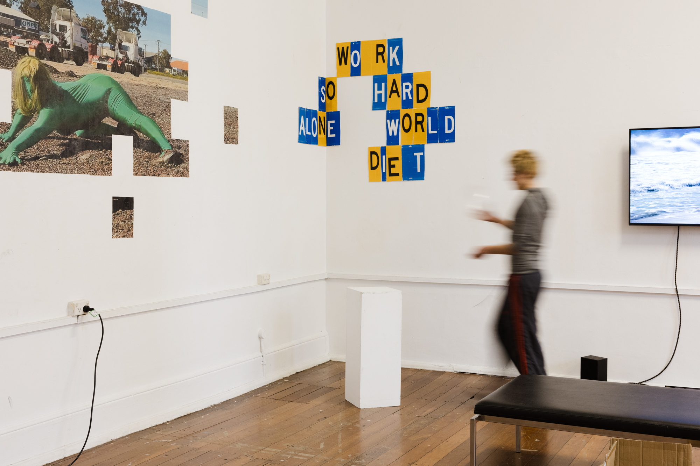
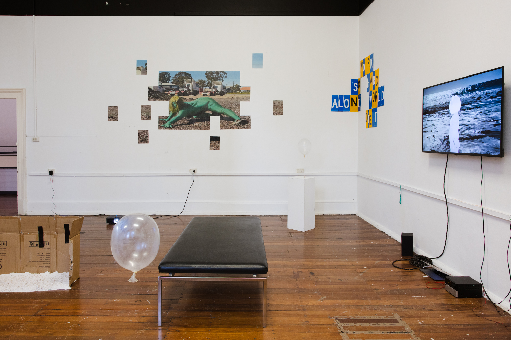
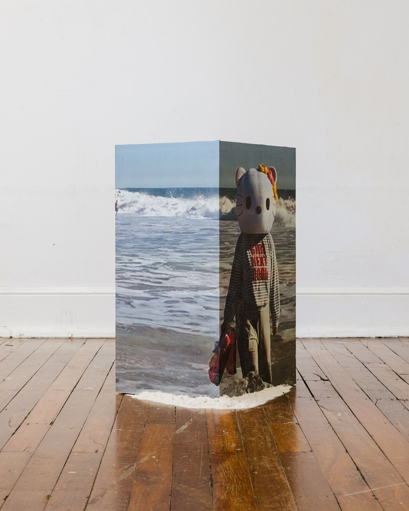
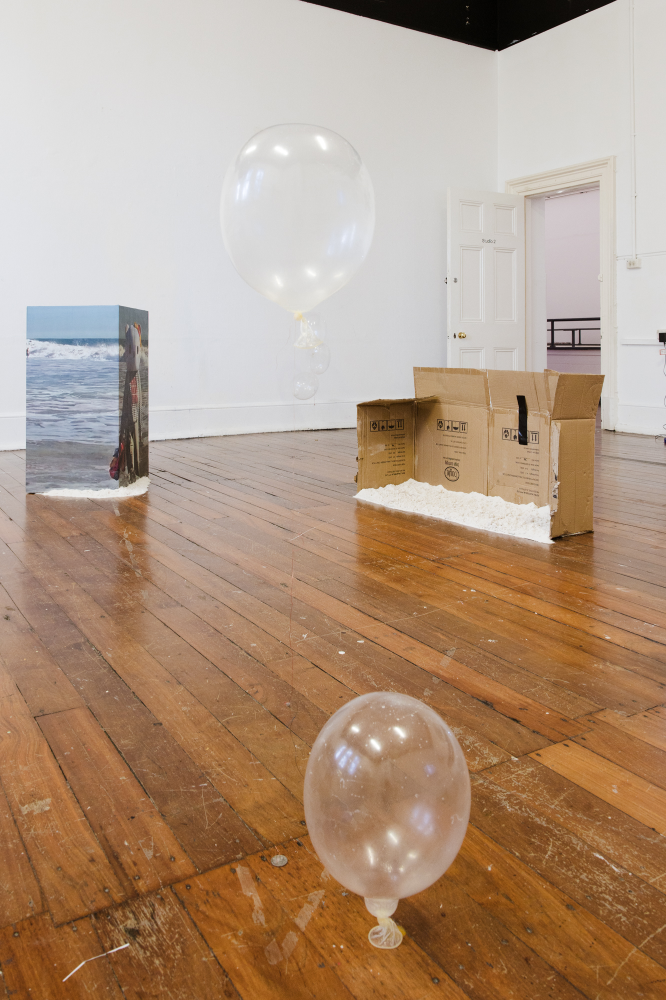

The artists time as the 2026 Hatched Interstate Artist-in-Residence involved the exploration of new fields of research, the introduction of digital mediums to his practice and installation experimentation. The artist worked with the iPhone as a mechanism to document a collaborative performance with Jacinta Larcombe that seeks to anonymise the performer as an outline, shape, ghost or avatar, who negotiates evolving conditions of visibility through engaging with the material conditions of their environments. The artist seeks to identify intersections between physical and digital public space, and employ sculpture and installation to make visible the shape of these intersections. Within his month-long residency, the artists research extended into fields of internet cinema, aesthetic category, image, truth and censorship.
In the artists studio, Unlikely heroes 1 is displayed on a wall mounted monitor, and Unlikely heroes 2 is projected onto a cardboard box weighed in position with washed children’s play sand. Still images from the video work are blown up into 50 page documents, which are treated like pixels and wheat pasted in unstable arrangements within the physical studio, on walls and plinths.
The artists second work developed in residence, Hustlers, is a time-based sculptural installation consisting of helium filled condoms tied to coins with exposed electrical wire.
All work is pictured installed in the artists studio for the Hatched Open Studios at Perth Institute of Contemporary art on Thursday 27th of August 2026.
Photos: Olivia Pizzale-Bryce